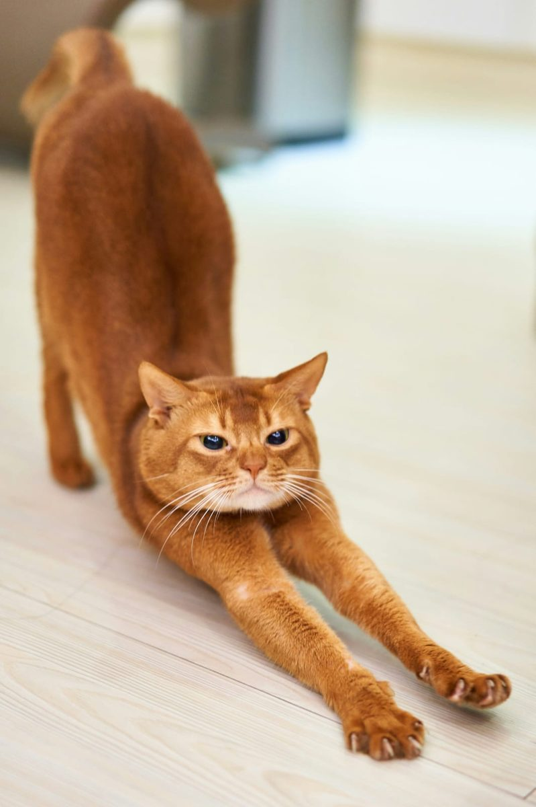

YOGA POSTURES · BREATHING · BEGINNERS
Cat-Cow Yoga Stretch: a gentle guide

Cat-Cow is a simple movement often included in Hatha Yoga classes. It gently moves the spine between two shapes while the breath provides a steady rhythm. You do not need to be flexible or experienced to explore it: the movement can be small, slow and adapted to what feels comfortable.
What are Cat Pose and Cow Pose?
Cat Pose is known in Sanskrit as Marjaryasana. From a hands-and-knees position, the spine rounds towards the ceiling and the head relaxes. Cow Pose, commonly paired with it, is Bitilasana: the chest moves gently forwards, the sitting bones tilt upwards and the abdomen softens. Together, Cat and Cow create a flowing spinal movement.
The names describe the shapes rather than a test to perform perfectly. Keep the range of motion comfortable and avoid forcing the neck or lower back into an extreme position.
How to practise Cat-Cow step by step
- Start on all fours, with hands approximately under shoulders and knees under hips. Spread your fingers and press gently through the hands.
- As you breathe out, round your back towards the ceiling. Let your head follow the movement without pressing your chin hard towards your chest. This is Cat Pose.
- As you breathe in, return through a neutral spine and gently broaden the chest forwards. Allow the abdomen to soften and lift the sitting bones only as far as comfortable. This is Cow Pose.
- Continue slowly for around five to eight cycles, allowing the breath to guide the pace. Finish in a neutral position and pause.
Breathing and movement
Many yoga teachers cue the rounding movement with an exhalation and the opening movement with an inhalation. This can make the sequence feel smooth and attentive. There is no need to take unusually deep breaths or hold the breath. If coordinating breath and movement feels distracting, breathe naturally and move at an easy pace.
Gentle adaptations
- For sensitive wrists: make fists, place the forearms on a stable support, or practise seated with hands resting on the thighs.
- For tender knees: place a folded blanket under the knees or use a seated version.
- For limited mobility: reduce the movement to a subtle tilt of the pelvis and a gentle change through the upper back.
- For neck comfort: keep the gaze towards the floor and let the head move only within a pain-free range.
Common things to avoid
Try not to rush from one shape to the other, lock the elbows, drop heavily into the shoulders or push the lower back beyond a comfortable range. The aim is awareness and ease, not maximum stretch. Stop if you feel pain, dizziness, numbness or unusual discomfort. If you have an injury, ongoing symptoms, are pregnant or have been advised to modify movement, seek appropriate professional guidance before trying a new exercise.
How Cat-Cow fits into Hatha Yoga
Cat-Cow is often used as a gentle preparation before other postures because it brings attention to the spine, shoulders, pelvis and breath. In a traditional Hatha Yoga practice, it may sit alongside breathing exercises, asanas and final relaxation. The exact sequence varies by teacher and by the needs of the people in the room.
At Sara Shanti Yoga in Southampton, classes follow the balanced principles of Sivananda Hatha Yoga in a friendly, unhurried setting. Beginners are welcome, and postures can be adapted so that students can work at a pace that feels appropriate for them.
Would you like to explore yoga in person?
If you are looking for welcoming Hatha Yoga classes in Southampton, find out more about the weekly Thursday practice, location and prices on the main website. Please contact Sara to check upcoming dates and availability before travelling to a class.
This article is general educational information, not medical advice. Choose a comfortable range of movement and seek qualified guidance if you have health concerns.